T1 · A captain makes a team and sets the line-up¶
| Who | A team captain (Maria) and her friends |
| Test id | T1 |
| Needs | the local stack (the friends are disposable players who join with the real invite code) |
| Catalogue | T-01 … T-16 in CATALOGUE.md |
| New in | #601: the line-up board (drag, tap-swap, formations, auto-arrange, save bar, readiness checklist) and the team hub |
What this flow is for¶
A team is just «your own players with a name». The captain makes it, sends an invite code, and then sets who starts, where, and who sits on the bench, on a pitch picture instead of a form. The saved line-up is what the team later brings into a game. This journey does it all with mouse and taps, including the awkward bits.
The flow at a glance¶
flowchart TD
A[My teams<br/>empty] --> B[Make a team<br/>name + badge drawn from the name]
B --> C[Team page:<br/>captain alone, board with empty spots]
C --> D[Invite code<br/>friends join with it]
D --> E[Nine players,<br/>all «not in the line-up»]
E --> F{Place a player}
F -->|tap the player,<br/>then a spot| G[Counter 1 of 5]
F -->|drag onto a spot| G
G --> H[Formation 2-1-1 / 2-2 / 1-2-1]
H --> I[Auto-arrange fills the rest]
I --> J[Tap one starter,<br/>tap another: they swap]
J --> K[Bench: at most three]
K --> L[Save line-up]
L --> M[«Line-up saved»<br/>checklist green]
M --> N[Leaves and comes back:<br/>exactly as saved]Step by step (from the recorded run)¶
Step 1. Maria, who plays five-a-side every week, signs in. Nobody has made a team yet.
on screen: Maria signs in
Step 2. Maria opens «My teams» from the menu. It says she is in no team yet and offers to make one or join one.
on screen: Maria opens «Οι ομάδες μου» and finds it empty
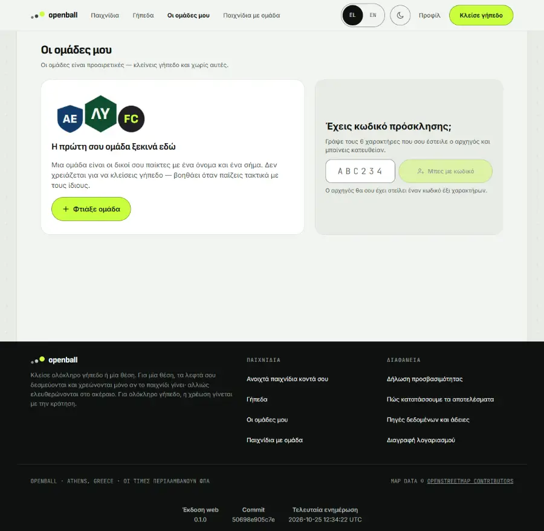
Same moment, on a phone (390 px):
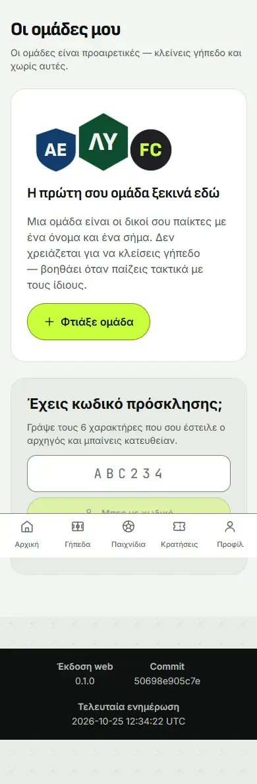
Step 3. She taps «Make a team». The button stays grey until she types a name; as she types, a crest is drawn from the name. She picks the shield shape.
on screen: Maria types a team name and watches the badge appear
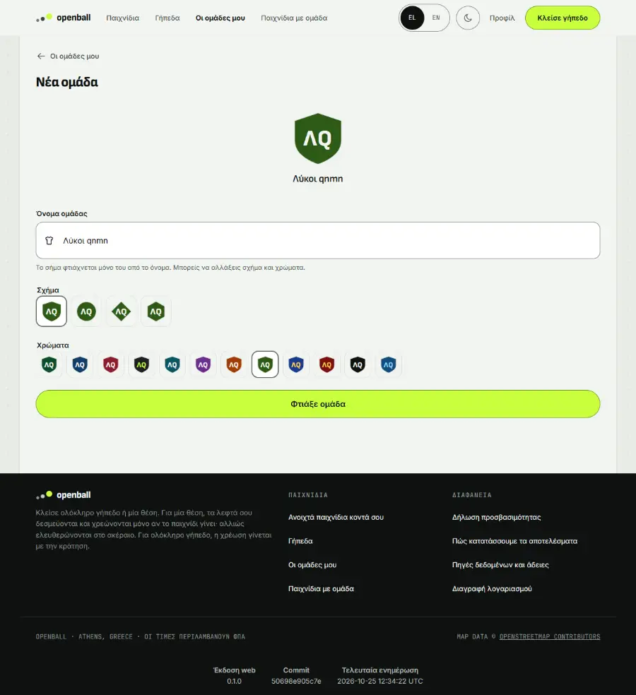
Step 4. She presses «Make a team». The team page opens: she is the only player and the captain, and the line-up board is already there, with five empty spots.
on screen: Maria creates the team and lands on its page
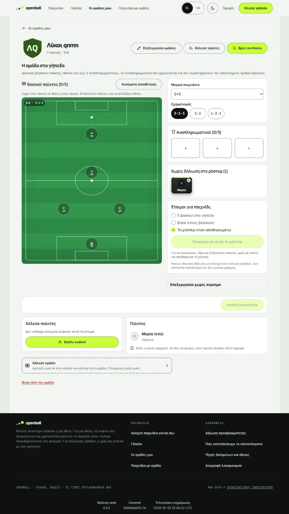
Same moment, in the dark theme and on a phone (390 px):
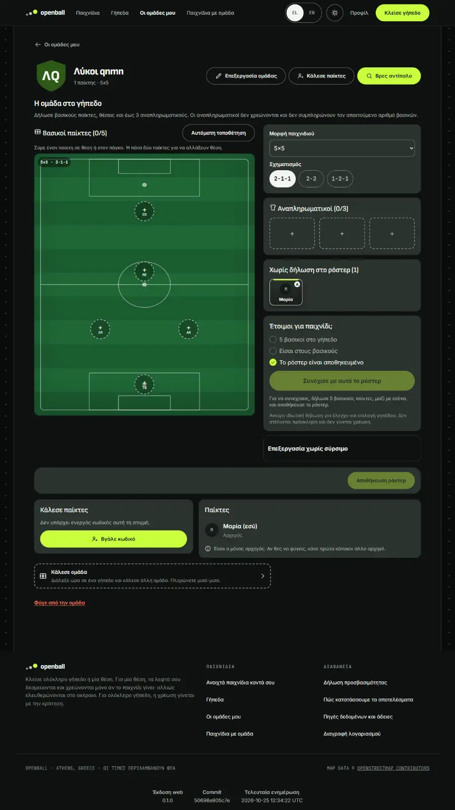
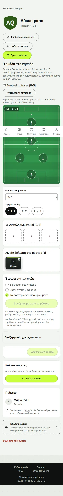
Step 5. Lower on the page is a six-character invite code with «Copy». She sends it to her friends.
on screen: Maria reads the invite code
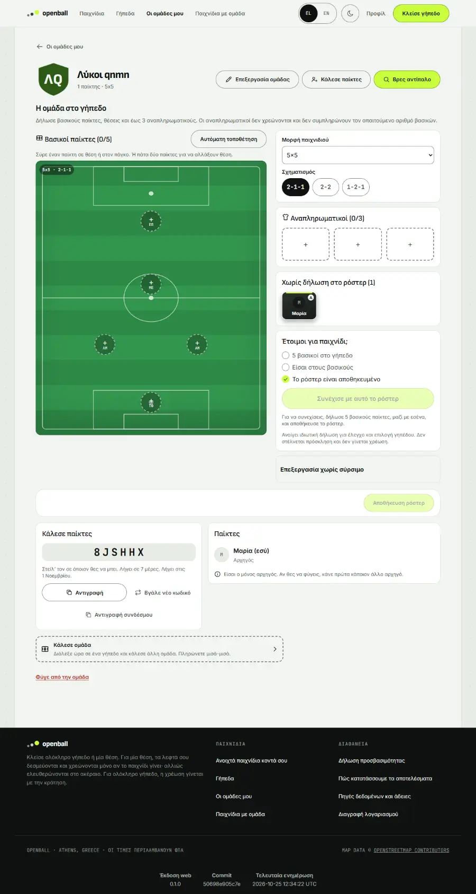
Step 6. Eight friends enter the code on their own phones. Maria reloads: the team now has nine players, all of them waiting in «Not in the line-up yet».
on screen: eight friends use the code (TEST HELPER: they join through the same route as «Μπες με κωδικό»)

Step 7. The empty spots on the pitch are greyed out and the «Continue» and «Save» buttons are disabled: she has not chosen anyone yet.
on screen: the board is locked until a player is picked
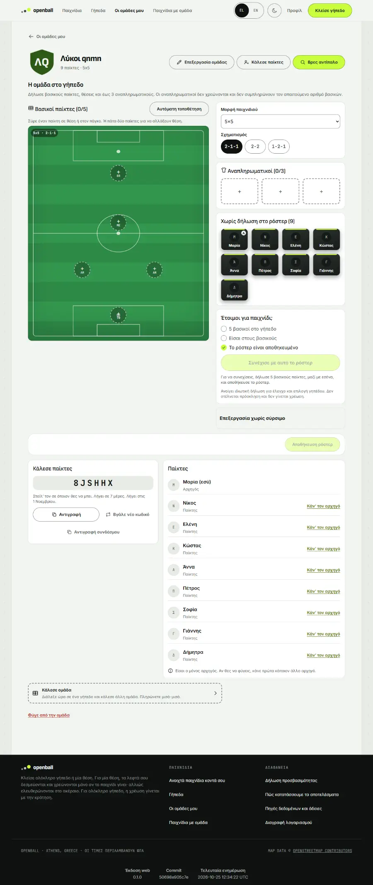
Step 8. She taps her own card and then the goalkeeper spot. Maria is in goal, the counter reads 1 of 5, and a note says there are unsaved changes.
on screen: Maria taps herself, then the goalkeeper spot
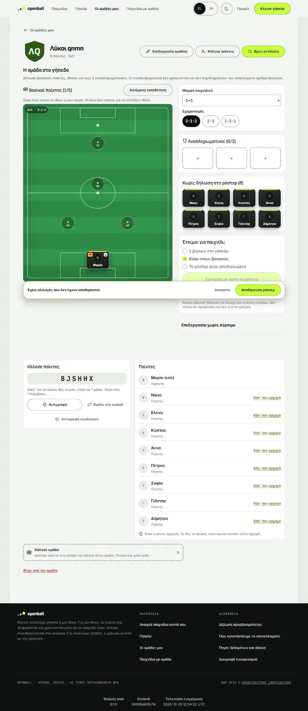
Step 9. She presses on Νίκος's card, drags it across the pitch and lets go on a defender spot. He takes the place; the counter reads 2 of 5.
on screen: Maria drags Νίκος onto the first defender spot
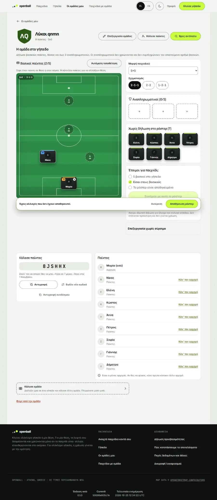
Step 10. She tries another shape: «2-2». The pitch redraws with two defenders and two attackers; the players already placed keep their places.
on screen: Maria changes the formation to 2-2
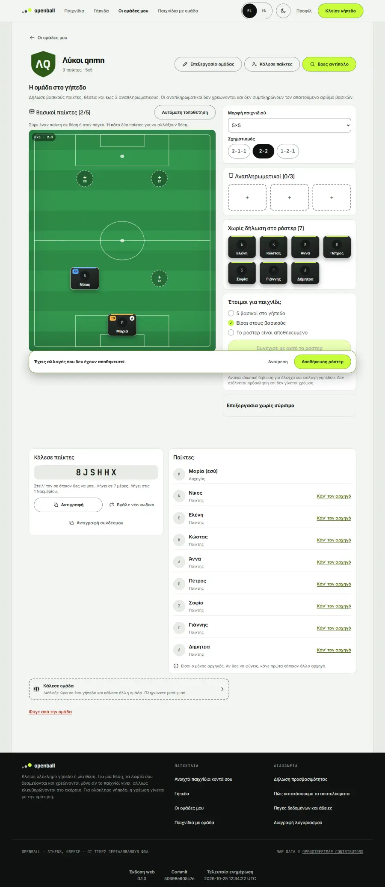
Same moment, in the dark theme:
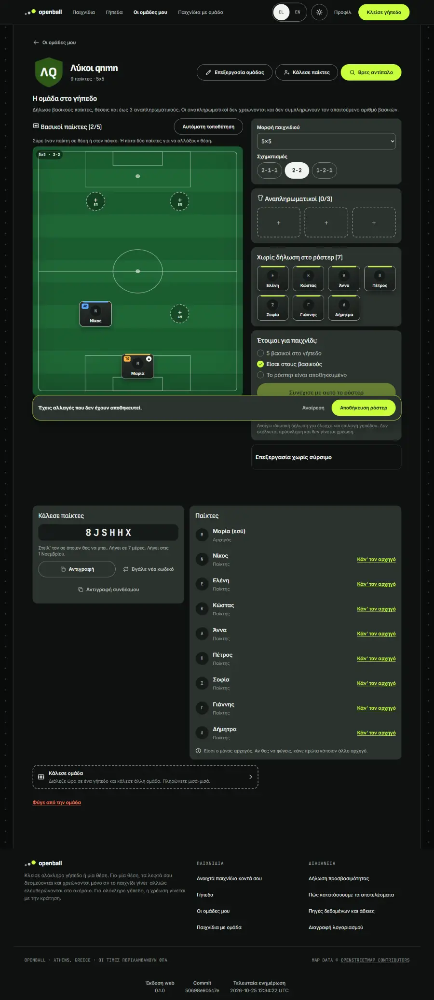
Step 11. Tired of dragging, she presses «Auto-arrange». The board fills all five spots with the players she has, and the checklist ticks «5 starters on the pitch».
on screen: Maria lets «Αυτόματη τοποθέτηση» fill the rest
Step 12. Straight after dragging, she taps a starter to pick it up for a swap. The card should light up as selected. ⚠️ failed in the recorded run
on screen: Maria taps a starter right after her drag
the first tap after a drag selects the card · expect(locator).toHaveAttribute(expected) failed · Locator: getByRole('button', { name: 'Νίκος, Αμυντικός', exact: true }) · Expected: "true"
Note: known finding: the first tap after a drag is ignored (issue filed)
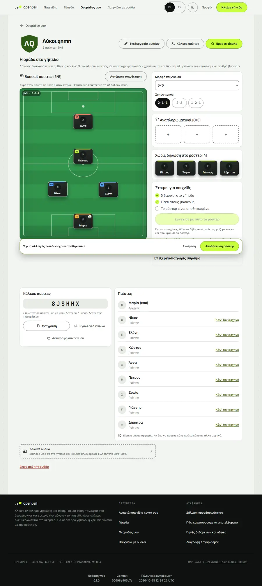
Step 13. To swap two people she taps one starter and then another. They trade places, and a hidden announcement tells screen-reader users what moved.
on screen: Maria swaps two players by tapping them one after the other
Step 14. She sends three more friends to the bench. The substitutes box now reads 3 of 3: a team can have at most three substitutes, and they are not charged.
on screen: Maria puts a player on the bench, and the bench has a limit of three
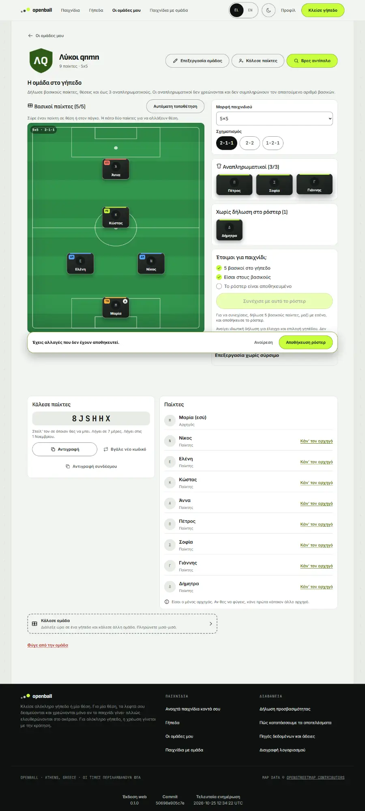
Step 15. She presses «Save line-up». It says «Line-up saved», the checklist is all green, and «Continue with this line-up» lights up for when she books a pitch.
on screen: Maria saves the line-up
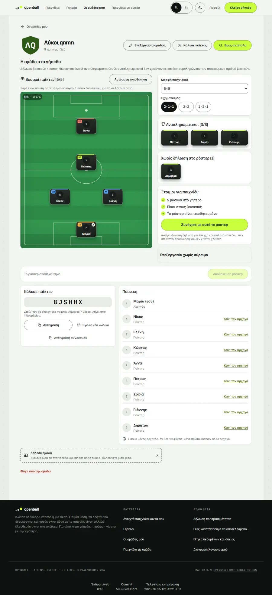
Same moment, in the dark theme and on a phone (390 px):
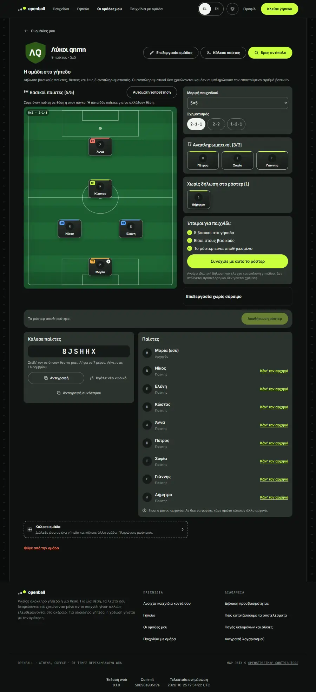
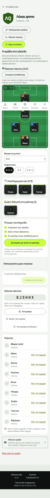
Step 16. She leaves the page and returns later. The line-up is exactly as she saved it.
on screen: the line-up is still there after leaving and coming back
Step 17. At the top of the team page two shortcuts: «Invite players» (back to the code) and «Find an opponent» (the list of teams looking for a match).
on screen: the team hub offers the next moves: invite players, find an opponent

What you should see¶
- Before any player is picked the spots are greyed out and «Save» and «Continue with this line-up» are disabled.
- Tapping a player and then a spot (or dragging) puts the player there; the counter reads «Starters 1/5» and a bar says there are unsaved changes (with «Discard» and «Save line-up»).
- Changing the formation redraws the pitch; auto-arrange fills the empty spots using the players' preferred positions.
- Tapping two starters in turn swaps them; a hidden live region announces the move to screen-reader users.
- The bench holds three; the ninth player stays under «Not in the line-up yet».
- After saving: «Line-up saved», the readiness checklist is complete («5 starters», «You are in the starting line-up», «Line-up saved») and «Continue with this line-up» is enabled. It persists across visits.
Edge cases and how they behave¶
| Case | Behaviour |
|---|---|
| Name too short / empty | «Make a team» stays grey |
| Bench full | No bench seat is left to drop on |
| Leaving with unsaved changes | The bar says so; «Discard» undoes them |
| Known finding | The first tap after a drag is ignored (the board keeps a «this click belongs to the drag» flag that is never cleared when the drag ends elsewhere). Recorded as a failing step in the run: #619 |
| Known finding | The disabled «Continue with this line-up» is explained by the text under it but is not linked to it for screen readers (aria-describedby): #620 |
| Other formats (6x6, 8x8) | Not walked here (see the catalogue) |